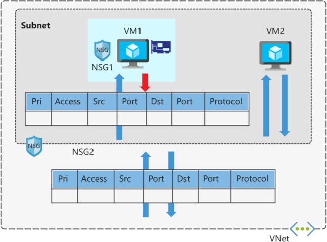
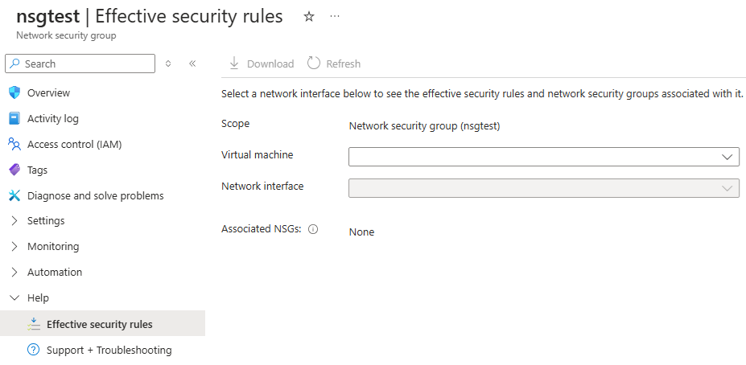

Each network security group and its defined security rules are evaluated independently. Azure processes the conditions in each rule defined for each virtual machine in your configuration.
- For inbound traffic, Azure first processes network security group security rules for any associated subnets and then any associated network interfaces.
- For outbound traffic, the process is reversed. Azure first evaluates network security group security rules for any associated network interfaces followed by any associated subnets.
- For both the inbound and outbound evaluation process, Azure also checks how to apply the rules for intra-subnet traffic. Intra-subnet traffic refers to virtual machines in the same subnet.
How Azure ends up applying your defined security rules for a virtual machine determines the overall effectiveness of your rules.
Network security group evaluation
When you apply network security groups to both a subnet and a network interface, each network security group is evaluated independently. Both inbound and outbound rules are considered based on the priority and processing order.

Things to consider when creating effective rules
Review the following considerations regarding creating effective security rules for machines in your virtual network.
-
Consider allowing all traffic . If you place your virtual machine within a subnet or utilize a network interface, you don't have to associate the subnet or NIC with a network security group. This approach allows all network traffic through the subnet or NIC according to the default Azure security rules. If you're not concerned about controlling traffic to your resource at a specific level, then don't associate your resource at that level to a network security group.
-
Consider importance of allow rules . When you create a network security group, you must define an allow rule for both the subnet and network interface in the group to ensure traffic can get through. If you have a subnet or NIC in your network security group, you must define an allow rule at each level. Otherwise, the traffic is denied for any level that doesn't provide an allow rule definition.
-
Consider intra-subnet traffic . The security rules for a network security group associated to a subnet can affect traffic between all virtual machines in the subnet. You can prohibit intra-subnet traffic by defining a rule in the network security group to deny all inbound and outbound traffic. This rule prevents all virtual machines in your subnet from communicating with each other.
-
Consider rule priority . The security rules for a network security group are processed in priority order. To ensure a particular security rule is always processed, assign the lowest possible priority value to the rule. It's a good practice to leave gaps in your priority numbering, such as 100, 200, 300, and so. The gaps in the numbering allow you to add new rules without having to edit existing rules.
View effective security rules
If you have several network security groups and aren't sure which security rules are being applied, you can use the Effective security rules link in the Azure portal. You can use the link to verify which security rules are applied to your machines, subnets, and network interfaces.

Note
Network Watcher provides a consolidated view of your infrastructure rules.